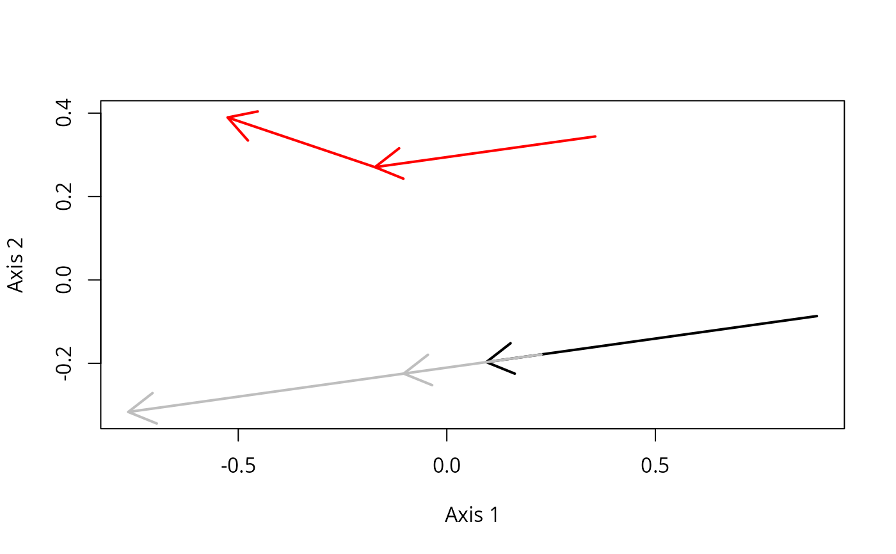
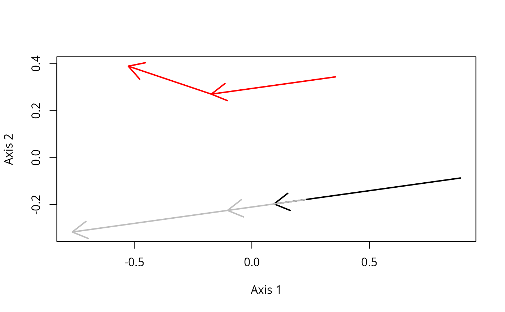

Trajectory sections are flexible way to cut longer trajectories. They are presently used chiefly in building cycles for cyclical ecological trajectory analysis (CETA) but might have other applications.
Usage
extractTrajectorySections(
x,
Traj,
tstart,
tend,
BCstart,
BCend,
namesTS = 1:length(Traj)
)Arguments
- x
An object of class
trajectoriesdescribing a cyclical trajectory.- Traj
A vector of length equal to the number of desired trajectory sections indicating the trajectories from which trajectory sections must be build (see details).
- tstart
A vector of start times for each of the desired trajectory sections (see details).
- tend
A vector of end times for each of the desired trajectory sections (see details).
- BCstart
A vector of start boundary conditions (either
"internal"or"external") for each of the desired trajectory sections (see details).- BCend
A vector of end boundary conditions (either
"internal"or"external") for each of the desired trajectory sections (see details).- namesTS
An optional vector giving a name for each of the desired trajectory sections (by default trajectory sections are simply numbered).
Value
Function extractTrajectorySections returns the base information needed to describe trajectory sections. Its outputs are meant to be used as inputs for other ETA functions in order to obtain desired metrics. Importantly, within trajectory sections, ecological states can be considered "internal" or "external" and may necessitate special treatment (see details). Function extractTrajectorySections returns an object of class sections containing:
d: an object of classdist, the new distance matrix describing the trajectory sections. Ecological states may be duplicated in this matrix if trajectory sections overlap. As compared to the input matrix,dmay also present deletions of ecological states that do not belong to any trajectory sections.metadata: an object of classdata.framedescribing the ecological states indwith columns:sites: the sites associated to each ecological states.sections: the names of the trajectory sections each ecological states belongs to.surveys: renumbering of the surveys to describe individual trajectory sections.times: the times associated to each ecological states.internal: a boolean vector withTRUEindicating "internal" ecological states whereasFALSEindicates "external" ecological states. This has important implications for the use ofextractTrajectorySectionsoutputs (see details).
interpolationInfo: an output that only appear if ecological states have been interpolated. It is used internally by plotting functions (seecyclePCoA) but is not intended to be of interest to the end user.
Function interpolateEcolStates returns an object of class dist including the desired interpolated ecological states.
Details
Trajectory sections functions:
Function
extractTrajectorySectionsreformats an object of classtrajectoriesdescribing one or more trajectories into another object of classtrajectoriesdescribing specified trajectory sections. Trajectory sections represent a way to subset trajectories flexibly. Cycles (seeextractCycles) are a particular case of trajectory sections.Function
interpolateEcolStatescompute interpolated ecological states and the new distance matrix associated (used in extractTrajectorySections).
Trajectory sections can be obtained using extractTrajectorySections. Trajectory sections allow to cut a longer trajectory into parts for further analyses. Cycles are specical case of trajectory sections.
A trajectory section TS(Traj,(tstart, BCstart),(tend, BCend)) is defined by the trajectory (Traj) it is obtained from, by an start and end times (tstart and tend) and start and end boundary conditions (BCstart, BCend).
The function extractTrajectorySections builds trajectory sections as a function of its arguments Traj, tstart, tend, BCstart, BCend.
Function interpolateEcolStates is called within extractTrajectorySections to interpolate ecological states when tstart and or tend do not have an associated measured ecological state within matrix d.
IMPORTANT: Trajectory sections comprises both "internal" and "external" ecological states (indicated in vector internal, see the output of function extractTrajectorySections).
"external" ecological states need a specific treatment in some calculations and for some operations within ETA, namely:
Centering, where external ecological states must be excluded from computation but included nonetheless in the procedure. This is automatically handled by function
centerTrajectories.Trajectory variability, where only internal ecological states must be taken in account. This is handled automatically by function
trajectoryInternalVariation.
Special care must also be taken when processing the data through principal coordinate analysis as external ecological states are effectively duplicated or interpolated in the output of extractTrajectorySections.
Examples
#Description of sites and surveys
sites <- c("1","1","1","2","2","2")
surveys <- c(1, 2, 3, 1, 2, 3)
times <- c(0, 1.5, 3, 0, 1.5, 3)
#Raw data table
xy <- matrix(0, nrow=6, ncol=2)
xy[2,2]<-1
xy[3,2]<-2
xy[4:6,1] <- 0.5
xy[4:6,2] <- xy[1:3,2]
xy[6,1]<-1
#Draw trajectories
trajectoryPlot(xy, sites, surveys,
traj.colors = c("black","red"), lwd = 2)
 #Distance matrix
d <- dist(xy)
d
#> 1 2 3 4 5
#> 2 1.000000
#> 3 2.000000 1.000000
#> 4 0.500000 1.118034 2.061553
#> 5 1.118034 0.500000 1.118034 1.000000
#> 6 2.236068 1.414214 1.000000 2.061553 1.118034
#Trajectory data
x <- defineTrajectories(d, sites, surveys, times)
#Cutting some trajectory sections in those trajectories
TrajSec <- extractTrajectorySections(x,
Traj = c("1","1","2"),
tstart = c(0,1,0.7),
tend = c(1.2,2.5,2),
BCstart = rep("internal",3),
BCend = rep("internal",3))
#extractTrajectorySections() works from distances,
#so for representation using trajectoryPlot(),we must first perform a PCoA:
Newxy <- cmdscale(TrajSec$d)
trajectoryPlot(Newxy,
sites = TrajSec$metadata$sections,
surveys = TrajSec$metadata$surveys,
traj.colors = c("black","grey","red"),lwd = 2)

#Distance matrix
d <- dist(xy)
d
#> 1 2 3 4 5
#> 2 1.000000
#> 3 2.000000 1.000000
#> 4 0.500000 1.118034 2.061553
#> 5 1.118034 0.500000 1.118034 1.000000
#> 6 2.236068 1.414214 1.000000 2.061553 1.118034
#Trajectory data
x <- defineTrajectories(d, sites, surveys, times)
#Cutting some trajectory sections in those trajectories
TrajSec <- extractTrajectorySections(x,
Traj = c("1","1","2"),
tstart = c(0,1,0.7),
tend = c(1.2,2.5,2),
BCstart = rep("internal",3),
BCend = rep("internal",3))
#extractTrajectorySections() works from distances,
#so for representation using trajectoryPlot(),we must first perform a PCoA:
Newxy <- cmdscale(TrajSec$d)
trajectoryPlot(Newxy,
sites = TrajSec$metadata$sections,
surveys = TrajSec$metadata$surveys,
traj.colors = c("black","grey","red"),lwd = 2)
